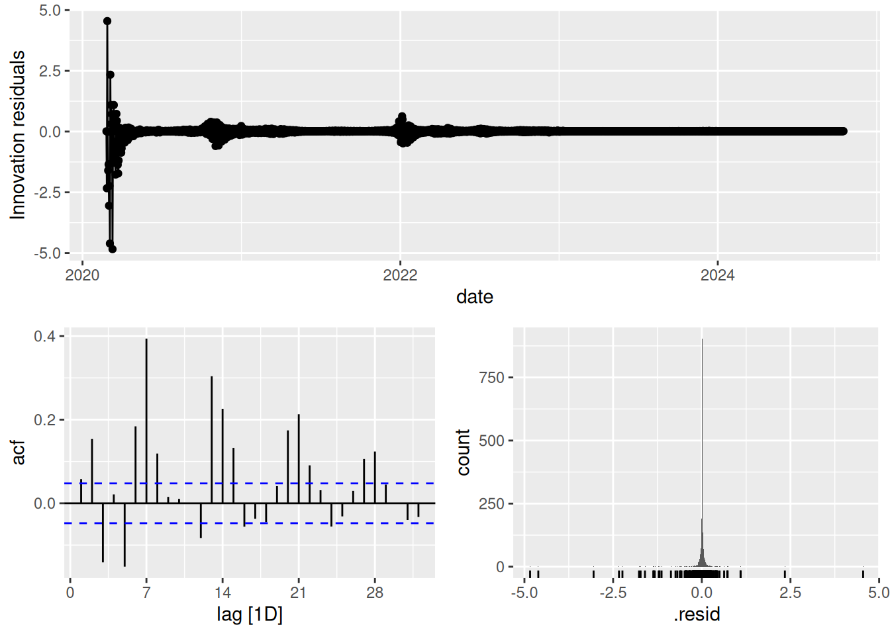
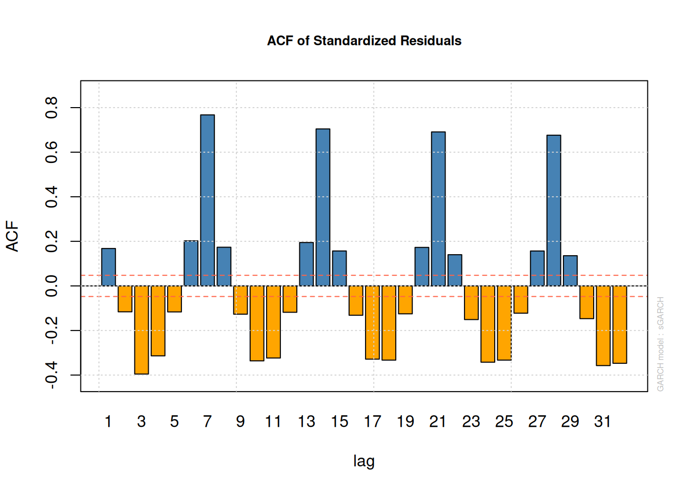
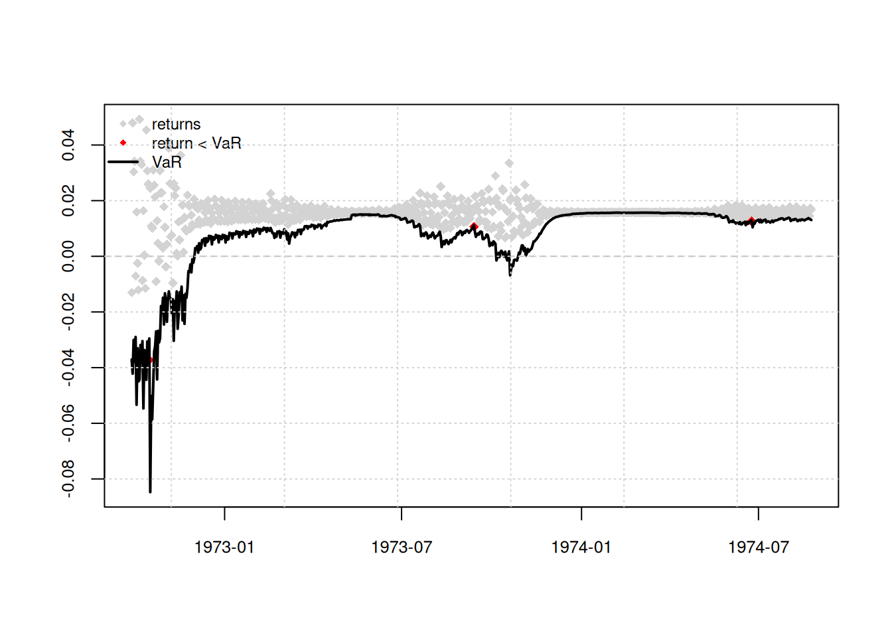

# Time Series Essentials, install if needed!
library(feasts) # Feature extraction & decomposition
library(fable) # Forecasting models (ARIMA, ETS, etc.)
library(fpp3) # Tidy time series datasets
library(astsa) # Applied statistical TS methods from textbook
library(tseries) # Unit root tests & TS diagnostics
library(tsibbledata) # Curated TS datasets
library(quantmod) # Financial data retrieval
library(tidyquant) # Financial analysis in tidyverse
library(purrr) # Functional programming for TS pipelines
library(readr) # Efficient data importActivity24
Theoretical Background: Volatility Clustering
Volatility clustering (periods of high/low variability persisting) violates ARIMA’s constant variance assumption. Common in COVID-19 cases (waves) and stock returns (crashes). ARCH (Autoregressive Conditional Heteroskedasticity) tests help detect this phenomenon.
Mathematical Foundation
ARCH Model:
The ARCH(q) model for volatility is defined as:
\[ \begin{align*} r_t &= \mu_t + \epsilon_t, \quad \epsilon_t = \sigma_t z_t, \\ \sigma_t^2 &= \alpha_0 + \alpha_1 \epsilon_{t-1}^2 + \dots + \alpha_q \epsilon_{t-q}^2 \end{align*} \]
where \(z_t \sim N(0,1)\), and \(\alpha_0 > 0\), \(\alpha_i \geq 0\).Key Idea:
Variance \(\sigma_t^2\) depends on past squared residuals (\(\epsilon_{t-1}^2, \dots, \epsilon_{t-q}^2\)), capturing volatility clustering.
Testing Steps
Fit ARIMA Model:
Model the mean structure (e.g., log returns).Extract Residuals:
Compute residuals \(\epsilon_t\) and squared residuals \(\epsilon_t^2\).Visual Diagnostics:
- Plot ACF/PACF of squared residuals.
- Look for significant autocorrelation (sign of ARCH effects).
- Plot ACF/PACF of squared residuals.
Statistical Tests:
- Ljung-Box Test: Tests autocorrelation in \(\epsilon_t^2\).
- Engle’s ARCH Test: Formal Lagrange Multiplier (LM) test for ARCH effects.
- Ljung-Box Test: Tests autocorrelation in \(\epsilon_t^2\).
Example 1: COVID-19 Cases
Data Preparation
Use the COVID19 package to fetch daily confirmed cases in Italy (clear volatility during waves):
library(COVID19)
library(fpp3)
# Get data
covid_data <- covid19(country = "Italy", level = 1, verbose = FALSE) %>%
as_tsibble(index = date) %>%
mutate(new_cases = difference(confirmed)) %>%
mutate(log_new_cases = difference(log(confirmed))) %>%
drop_na(log_new_cases, new_cases) %>%
mutate(scaled_cases = scale(log_new_cases))Model Fitting & Volatility Check
Fit an ARIMA model to new_cases and inspect residuals:
fit_covid <- covid_data %>%
model(ARIMA(scaled_cases ~ pdq(2,1,1) + PDQ(0,0,0)))
# Check residuals for volatility clustering
fit_covid %>% gg_tsresiduals()
augment(fit_covid) %>%
ggplot(aes(x = date, y = .resid^2)) +
geom_line() + labs(title = "Squared Residuals (COVID-19 Cases)")
fit_covid %>%
augment() %>%
features(.innov,~ljung_box(.x, lag=24, dof=4)
)# A tibble: 1 × 3
.model lb_stat lb_pvalue
<chr> <dbl> <dbl>
1 ARIMA(scaled_cases ~ pdq(2, 1, 1) + PDQ(0, 0, 0)) 920. 0Key Observation: Squared residuals cluster many times between January 2020 and January 2023 (COVID waves), indicating volatility clustering.
augment(fit_covid) %>%
ggplot(aes(x = date, y = .resid^2)) +
geom_line() + labs(title = "Squared Residuals (COVID-19 Cases)")
Example 2: Stock Returns
Data Preparation
Fetch S&P 500 returns using tq_get() (more realistic volatility with irregular trading days):
# Get S&P 500 data and calculate daily returns
sp500 <- tq_get("^GSPC", get = "stock.prices", from = "2000-01-01") %>%
as_tsibble(index = date) %>%
fill_gaps() %>%
fill(close, .direction = "down") %>%
mutate(return = difference(log(close))) %>%
drop_na(return) Model Fitting & Volatility Check
fit_sp500 <- sp500 %>%
model(ARIMA(return ~ pdq(1,0,1)))
# Visualize squared residuals for volatility clustering
augment(fit_sp500) %>%
ggplot(aes(x = date, y = .resid^2)) +
geom_line(alpha = 0.6) +
labs(title = "Squared Residuals (S&P 500 Returns)")
Key Observations:
- Squared residuals cluster during crises (e.g., 2008 financial crisis, 2020 COVID crash).
- ARIMA assumes constant variance — clustered residuals violate this, signaling volatility clustering.
Fix: COVID-19 Cases
1. Extract Residuals
First, extract residuals from the ARIMA model:
# For COVID-19 example:
covid_resid <- augment(fit_covid) %>%
select(date, .resid)2. Visual ARCH Test (ACF/PACF of Squared Residuals)
Plot autocorrelation in squared residuals:
covid_resid %>%
mutate(resid_sq = .resid^2) %>%
gg_tsdisplay(resid_sq, plot_type = "partial") +
labs(title = "ACF/PACF of Squared Residuals (COVID-19)")
Interpretation:
- Significant spikes at lag 1 or higher → Evidence of ARCH effects.
3. Engle’s ARCH Test
Use the FinTS package to test ARCH effects on residuals:
library(FinTS) # install.packages("FinTS")
# Extract residual vector
resid_vector <- covid_resid %>% pull(.resid)
# Engle’s ARCH test (lag = 5)
ArchTest(resid_vector, lags = 5, demean = TRUE)
ARCH LM-test; Null hypothesis: no ARCH effects
data: resid_vector
Chi-squared = 273.72, df = 5, p-value < 2.2e-16Conclusion: If \(p < 0.05\), reject the null (ARCH effects exist).
Next Steps: GARCH Modeling
If ARCH effects are detected, use the rugarch package to model volatility:
library(rugarch) # install.packages("rugarch")
# Fit ARIMA(1,0,1)-GARCH(1,1)
spec <- ugarchspec(
mean.model = list(armaOrder = c(1,1)),
variance.model = list(model = "sGARCH")
)
fit_garch <- ugarchfit(spec, data = resid_vector)
plot(fit_garch, which = 10)
Parameter Stability
Check rolling estimates to assess model stability over time:
roll_fit <- ugarchroll(spec, data = resid_vector, n.ahead = 1, n.start = 1000)
plot(roll_fit, which = 4) # Rolling parameter estimates
Lab activity: S&P 500 Returns
Repeat the above steps for S&P Returns
# Extract residuals from ARIMA
sp500_resid <- augment(fit_sp500) %>% select(date, .resid)
# Engle’s test
resid_sp500 <- sp500_resid %>% pull(.resid)
ArchTest(resid_sp500, lags = 5, demean = TRUE)
ARCH LM-test; Null hypothesis: no ARCH effects
data: resid_sp500
Chi-squared = 1049.2, df = 5, p-value < 2.2e-16# ACF/PACF of squared residuals
sp500_resid %>%
mutate(resid_sq = .resid^2) %>%
gg_tsdisplay(resid_sq, plot_type = "partial")